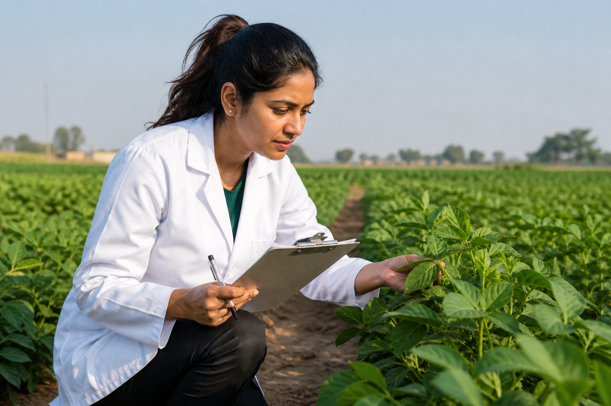
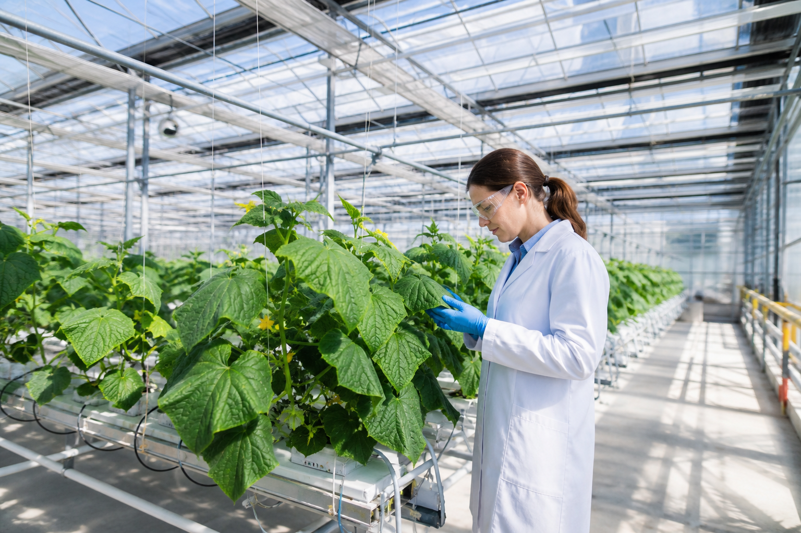
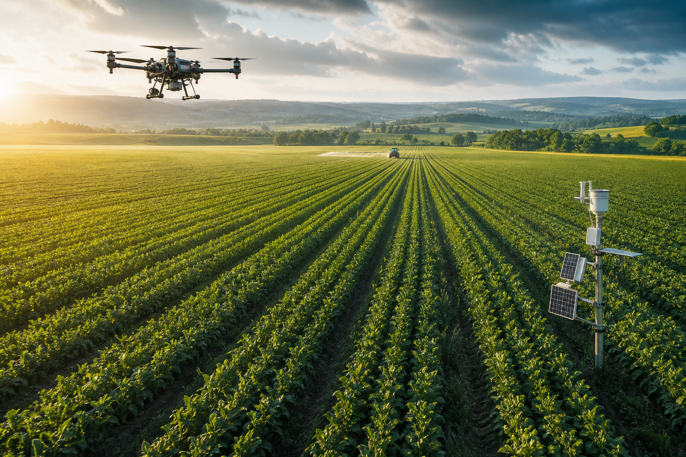

Research & Development
Scientific research and development across agriculture and allied sciences.
Agricultural Research & Innovation
TerraVita Research advances agricultural science, innovation, testing, and technology to create smarter, more sustainable, and resilient agricultural systems.
TerraVita Research focuses on research, development, innovation, testing, validation, and commercialization across agriculture and allied agricultural sciences.
The organization works across modern and sustainable agricultural systems, combining scientific research, technology, field applications, testing, and professional services to support the advancement of agricultural practices.

Scientific research and development across agriculture and allied sciences.
Testing, evaluation and validation of agricultural technologies, inputs and practices.
Development and application of innovative agricultural technologies and practices.
Solutions supporting resilient, efficient and sustainable agricultural systems.
Applying science, technology and field knowledge to the challenges of modern agriculture.
Data-driven farming approaches that optimize inputs, monitor crops, and improve field-level decision-making.
Practices that restore soil health, enhance biodiversity, and build long-term agricultural resilience.
Systems that balance productivity with environmental stewardship and resource conservation.
Controlled-environment growing systems including greenhouses and polyhouses for year-round production.
Soilless cultivation systems using nutrient-rich water solutions for efficient crop production.
Integrated fish and plant production systems combining aquaculture with hydroponic cultivation.
Ecological farming methods that avoid synthetic inputs and prioritize natural soil and crop health.
Adaptive practices and technologies that help agriculture respond to climate variability and change.
Digital tools, platforms, and connected systems for smarter farm management and monitoring.
Satellite and aerial imaging technologies for crop monitoring, land assessment, and field analysis.
Geographic information systems for spatial analysis, mapping, and agricultural land management.
Collection, processing, and interpretation of agricultural data to support informed decisions.
Systematic assessment of crop performance, varieties, and cultivation practices under field conditions.
Rigorous testing and evaluation of agricultural inputs including seeds, fertilizers, and crop protection products.
Comprehensive research, development, and infrastructure supporting agricultural advancement across diverse disciplines.

We undertake, promote, and facilitate research, development, innovation, testing, validation, and commercialization across core agricultural disciplines.

Advancing modern farming approaches that combine productivity with environmental responsibility and technological innovation.
Technical expertise and field-oriented services supporting agricultural innovation and decision-making.
Expert guidance on agricultural research, technology adoption, and strategic planning.
Specialized technical support for agricultural systems, equipment, and production methods.
Laboratory and field-based analysis of soil, water, plant, and agricultural samples.
Knowledge transfer and practical support connecting research findings with field applications.
Structured programs to build skills in agricultural research, technology, and sustainable practices.
Assistance with documentation, testing, and compliance for agricultural certification processes.
End-to-end planning and execution of agricultural research and development projects.
Comprehensive on-ground assessments of crops, land, and agricultural conditions.
Detailed analysis of soil composition, fertility, and water quality for informed agricultural decisions.
Regular observation and assessment of crop health, growth, and performance throughout the season.
Advisory and implementation support for climate-adaptive agricultural practices and technologies.
Independent testing and assessment of seeds, fertilizers, bio-inputs, and crop protection products.
Implementation and support for digital farming tools, sensors, and connected agricultural systems.
Satellite and aerial imagery services for crop monitoring, land use analysis, and field mapping.
Spatial mapping, analysis, and decision support using geographic information systems.
Aerial surveying, crop scouting, and precision application using unmanned aerial systems.
Guidance on selecting, deploying, and optimizing agricultural machinery and equipment.
Processing and interpreting agricultural data to generate actionable insights and reports.
Analysis of agricultural markets, trends, and opportunities to inform strategic decisions.
Systematic quality control processes for agricultural products, inputs, and production systems.
Comprehensive laboratory analysis for soil, water, plant tissue, and agricultural product testing.
A visual journey through our agricultural research, innovation, and field operations.
Research and technology can help agriculture become more resilient, resource-efficient and responsive to a changing environment. TerraVita Research explores practical approaches that connect scientific knowledge with sustainable agricultural systems.
Research grounded in scientific methods and evidence.
Approaches designed around real agricultural environments and practical applications.
Applying modern technology to agricultural challenges.
Connecting agricultural science, technology and field applications.
Supporting evaluation, testing and validation of agricultural solutions.
Promoting resilient and environmentally responsible agricultural systems.
Connect with TerraVita Research to discuss research, testing, agricultural technology, consultancy, innovation, or collaboration opportunities.